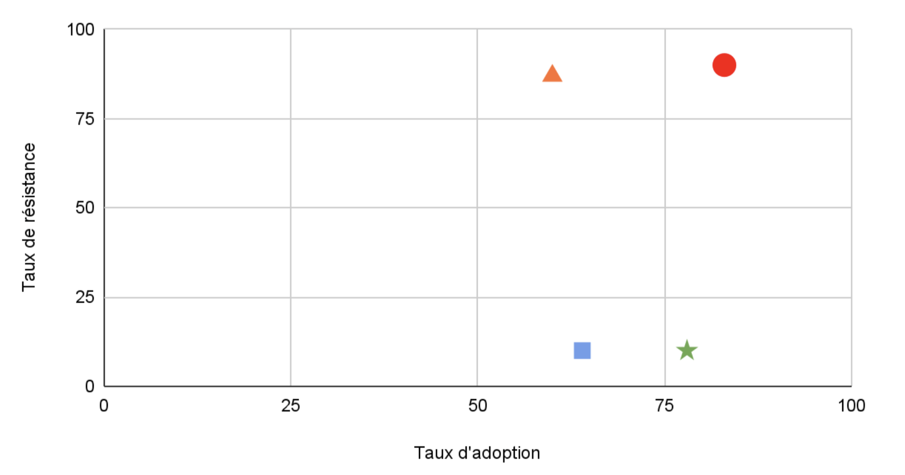

Engouement multi-sectoriels
Adoption de l’IA par secteur
Les taux d’adoption de l’IA varient selon les secteurs.
Les secteurs Finance & Industrie montrent une adoption robuste de l’IA, avec environ 78 % des organisations utilisant activement l’IA en 2024 — un bond significatif par rapport à 55 % en 2023 selon le Stanford AI Index 2025 (hai.stanford.edu) — et une résistance faible : les décideurs sont désormais matures et alignés sur les usages, ce qui fait de ces secteurs des environnements propices à l’innovation. En revanche, dans le domaine de la Recherche & Universités, on observe un usage individuel massif (60 % des étudiants et professeurs) mais un fort blocage institutionnel : seules environ 13 % des universités se déclarent pleinement prêtes à déployer l’IA à l’échelle de l’établissement — révélant un déficit de stratégie et de préparation . Quant à la Culture & Création, malgré un taux d’adoption élevé (\~83 % des professionnels), la résistance demeure intense : les inquiétudes portent sur les droits d’auteur et la transparence, illustrant une prévalence de l’opinion sur la réalité opérationnelle .
Niveaux d’adoption par secteurs d’activité
| Région/Pays | Niveau d’adoption |
|---|---|
| Banque & Finance | Adoption rapide (≈ 78 %) mais difficultés de recrutement d’experts — 20 % des équipes financières signalent des lacunes en compétences IA. |
| Commerce / Numérique / Industrie | Usage généralisé, notamment dans le B2B où 64 % des dirigeants UK/UE obtiennent un retour sur investissement dès l'année 1 (IT Pro). |
| Culture / Création | 83 % des professionnels créatifs utilisent déjà l’IA (It's Nice That) ; cependant, des articles récents montrent des craintes fortes liées aux droits d’auteur et à la transparence (The Australian). |
| Recherche & Universités | Taux de déploiement officiel plus bas (~11 % d’institutions utilisatrices), malgré une utilisation individuelle massive (>60 % d’étudiants/professeurs). |
Projection de l'adoption de l'IA en Entreprise (2023-2027)

D’ici 2026, on prévoit que près de 95 % des organisations auront adopté au moins un usage de l’IA — chatbots, automatisation, analyses de données — tandis qu’en 2027, ce taux montera à environ 98 %, les seuls retardataires étant des structures marginales ou des acteurs dans des pays émergents faiblement connectés. Cette trajectoire de diffusion, confirmée par une montée spectaculaire de 55 % à 78 % entre 2023 et 2024 selon le Stanford AI Index 2025 (optimumpartners.com), traduit une évolution vers une presque universalisation de l’IA. Pour le courtier en assurance, cela signifie qu’il est désormais indispensable de dépasser la simple phase d’adoption : l’enjeu devient la maturité, avec un focus renforcé sur la gouvernance, la sécurité et l’impact sociétal de l’IA, qui cesse d’être une nouveauté pour devenir un risque systémique global à couvrir de manière proactive.
Analyse des scénarios redoutés par les secteurs
Le monde de la culture et de la création exprime des inquiétudes similaires à celles observées dans d’autres secteurs : demande de droits d’auteurs pour les travaux générés par l’IA, même si un tel modèle évoque une démarche régressive. Les développeurs de logiciels, notamment ceux derrière des copilotes, cherchent eux aussi à protéger leurs contributions — en vain face à la nature collaborative et non-binaire de l’apprentissage machine .
En finance, les stratégies fondées sur l’IA réclament une expertise en éthique et conformité — tout comme les juristes et architectes cherchent des cadres clairs pour l’utilisation de l’IA. Tous ces secteurs partagent un même défi : intégrer l’IA comme partenaire créatif et productif, non simple copier-coller. Ils doivent dépasser la croyance que l’IA « prend » ce qu’elle « copie ».
Adoption vs Résistance

▲ Recherche/Universités ■ Commerce/Industrie ★ Finance ⬤ Culture/Création
En dehors du secteur culturel, plusieurs scénarios redoutés se dessinent également dans d’autres domaines :
-
Finance & Industrie : la généralisation de l’IA (≈ 78 % des organisations) engendre des préoccupations sérieuses autour de la sécurité des données, de la conformité réglementaire, des biais algorithmiques et du risque systémique. Selon Accenture, 78 % des institutions financières citent la confidentialité et la sécurité des données comme leurs principales inquiétudes (LinkedIn). De même, 80 % des responsables sécurité en finance estiment qu’ils ne peuvent pas suivre les avancées des cybercriminels, notamment ceux utilisant l’IA (Business Insider) ; et seuls 18 % des établissements ont établi des politiques internes claire, selon une étude de Legalfly (FNLondon).
-
Commerce / Numérique / Industrie : malgré un ROI rapide (64 % dès la première année) , la réticence porte sur les défis d’intégration des systèmes hérités, le manque de gouvernance AI structurée, les vulnérabilités cyber (shadow AI, attaques adversariales) (success.com).
-
Recherche & Universités : si plus de 60 % des chercheurs utilisent l’IA individuellement, seulement environ 13 % des établissements se disent prêts à le déployer institutionnellement, faute de gouvernance, de politique académique claire et de protection des données sensibles . Les dirigeants d’universités reconnaissent un besoin urgent de former, réformer les curricula et renforcer la structure institutionnelle .
Ainsi, malgré une adoption généralisée, tous ces secteurs sont plus ou moins confrontés à des risques transversaux : manque de compétences, faible transparence, déficit de gouvernance, biais algorithmique, problèmes de cybersécurité, et risques systémiques, suivant une logique commune : l’IA doit être un partenaire créatif et fiable, pas un outil opaque ou dangereux.